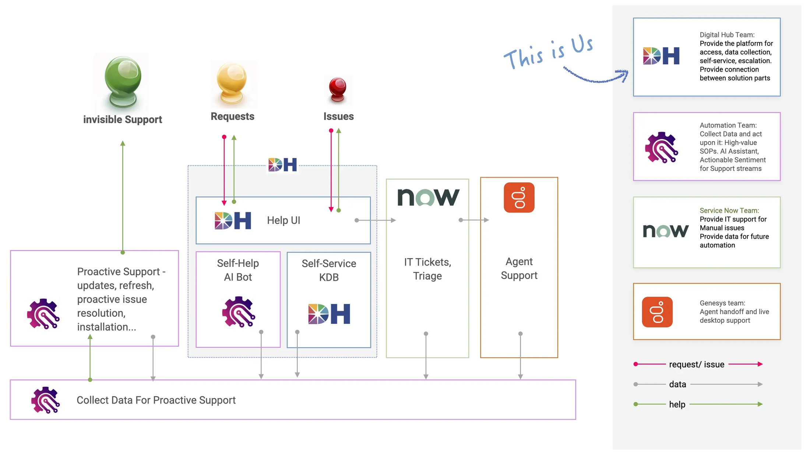
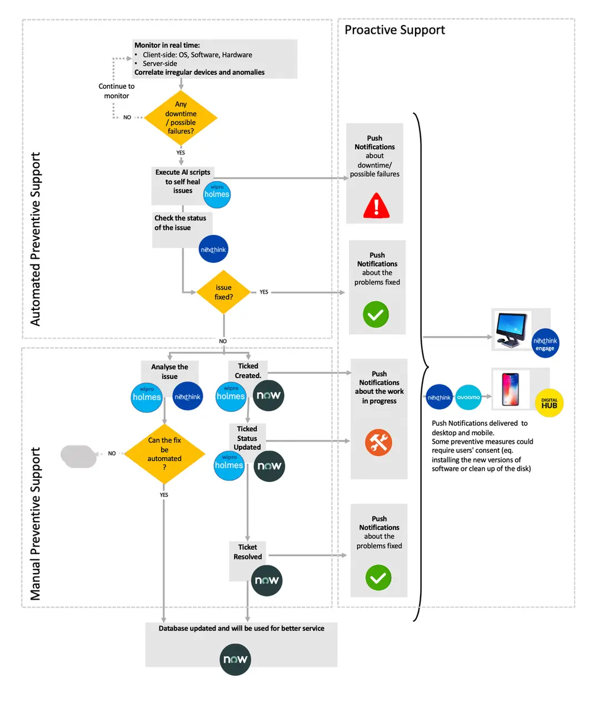
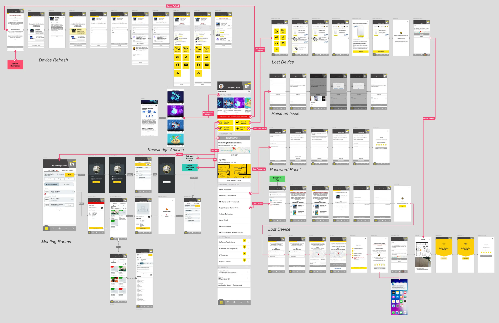
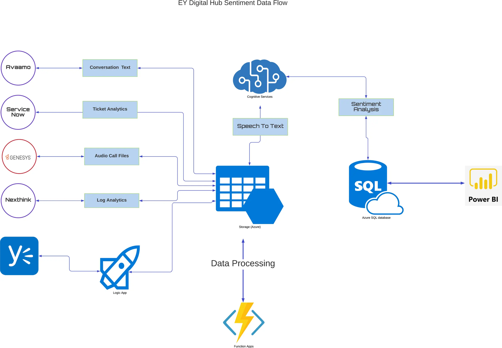
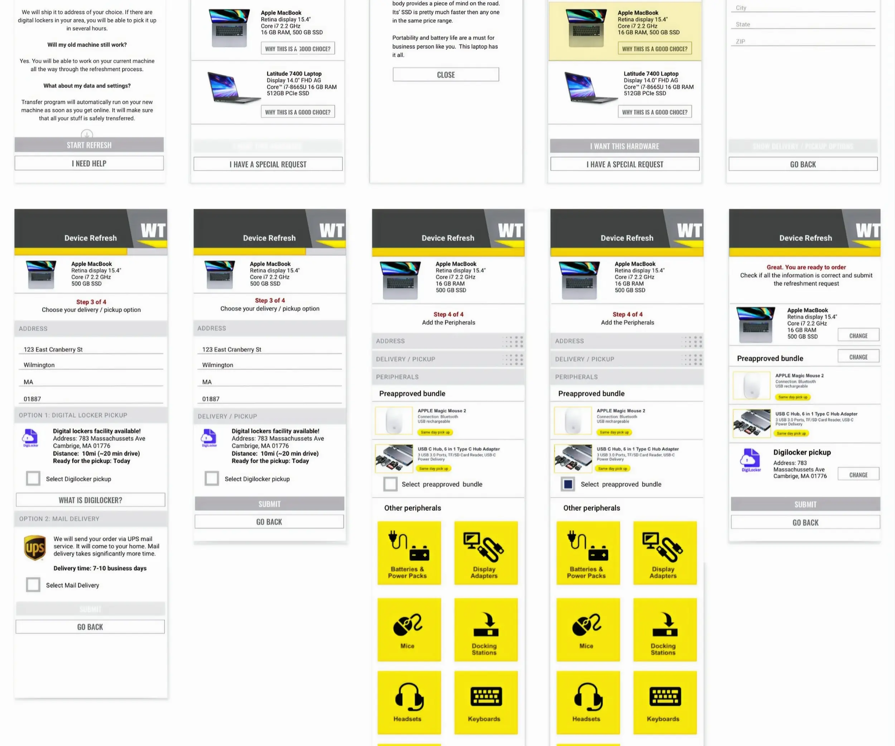

A 2019 proposal for EY: employee IT support that solves problems before people notice them.
In consulting, the solution is designed before the contract is signed: the client chooses the team by its design.
EY employees work on tight client deadlines, but one IT issue meant 3+ support channels, 30%+ of cases were lost when passed between teams, requests had no status, and employees went through the same verification steps again and again.
As UX and service designer on Wipro's proposal team, I designed Digital Hub, aligned Wipro's Automation, ServiceNow and Genesys teams around it, and led a team of 7 through the 10 key journeys.
Digital Hub reached the final round of the bid, where the other team won. The client saw it as the strongest part of our proposal; it became the core of 50+ later Wipro bids and the basis of the award-winning Connected Employee.
EY's auditors and consultants work on client deadlines, travel a lot and have busy seasons. To fix one IT issue, they had to follow it across several support channels. Cases were lost when passed between teams, requests had no status, and password resets alone made up a third of all tickets.

EY sent the RFP to Wipro's ServiceNow team. Digital Hub was invited into the proposal to build a small app, and the vendors and tools were fixed from the start.
Digital Hub was everything employees would see, so it became the center of the proposal. I aligned Wipro's Automation, ServiceNow and Genesys teams on how each platform would work for employees and checked whether each of the 10 journeys was possible. I drew as-is diagrams from the little information we had and to-be functional diagrams for each platform, and shaped everyone around a design-first approach.
Tools were chosen before design started, as is usual in large consulting. The Avaamo bot was expensive where a cheaper Microsoft-based bot could have done the job, so the design had to work with what we had.
With roles agreed, the journeys had to be designed in detail.

EY's discovery named 10 journeys that would decide the helpdesk's success.
I led a team of 7 (another designer, 4 business analysts and an architect) through full discovery: stakeholder workshops, interviews, 30+ surveys and a review of past incidents. We built complete profiles for every employee segment, from their work and their day to where Digital Hub fits, worked out the tooling for each journey, and mapped every journey in swimlane diagrams between platforms and employees. Then I combined the journeys into day-in-the-life stories and showed one as a narrated video.
One employee goes through several journeys in a single working day, so we had to show how the journeys connect, not just each one alone.
Ten journeys meant many screens, so I looked for what repeated.

Designed one by one, ten journeys would mean ten different sets of screens and ten times the development.
Split all journeys into modules where functionality repeats. Losing a laptop and ordering a new one follow the same path once the order starts. Fewer screens to build, and the same screens everywhere, so employees learn the app once and it stays consistent and predictable. I wireframed all 10 journeys from these modules and tested them with focus groups from each employee segment.
Each stage had to win a client demo before the bid moved to the next round.
From the start, the goal was for employees to need support as little as possible.

Most IT problems are predictable, yet employees still had to stop work and report them.
Designed the service so most problems are solved before anyone notices, and wrote proactive scenarios for the AI bot with the Automation team. A broken TV in a meeting room: the app offers another room before anyone asks. An old laptop: replacement starts on its own. A bug after an update: the fix goes out to every machine before people run into it. Requests go to self-service, issues go to the bot, and only what's left becomes a ticket for a person.
Every proactive behavior had to be written as a separate bot scenario together with the Automation team.
We lost the bid, but the client saw Digital Hub as the strongest part of our proposal. It became our team's core product, and more than 50 bids were built on it. The same principle became Connected Employee, an HR product built mainly by our team in London, which won the GCG Team Award for Best Consulting Asset Solution.
Digital Hub was mainly my work. After it, I was promoted from Principal Consultant to Managing Consultant (Associate Partner).
Delivered: research, platform and swimlane diagrams, day-in-the-life stories, 10 wireframed journeys tested with employees, the module system and a five-year plan.
Designed
